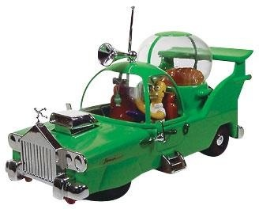
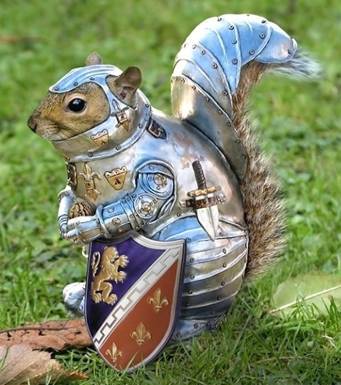
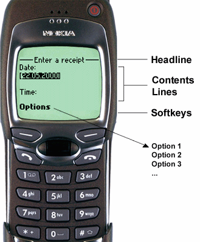
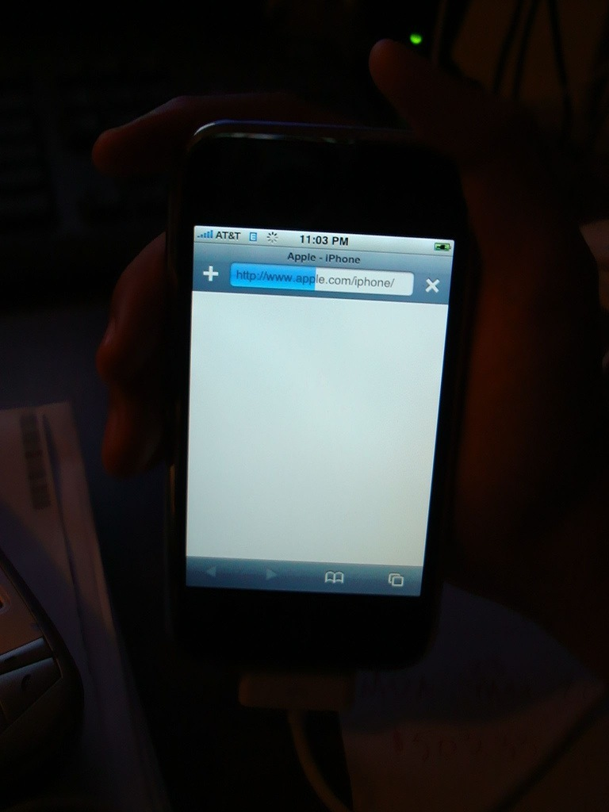
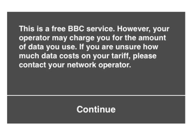
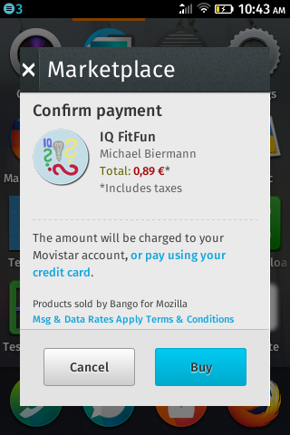
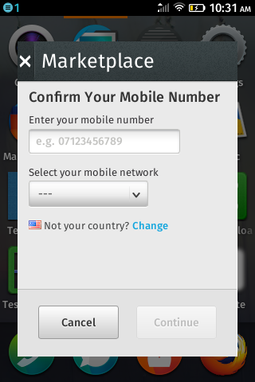
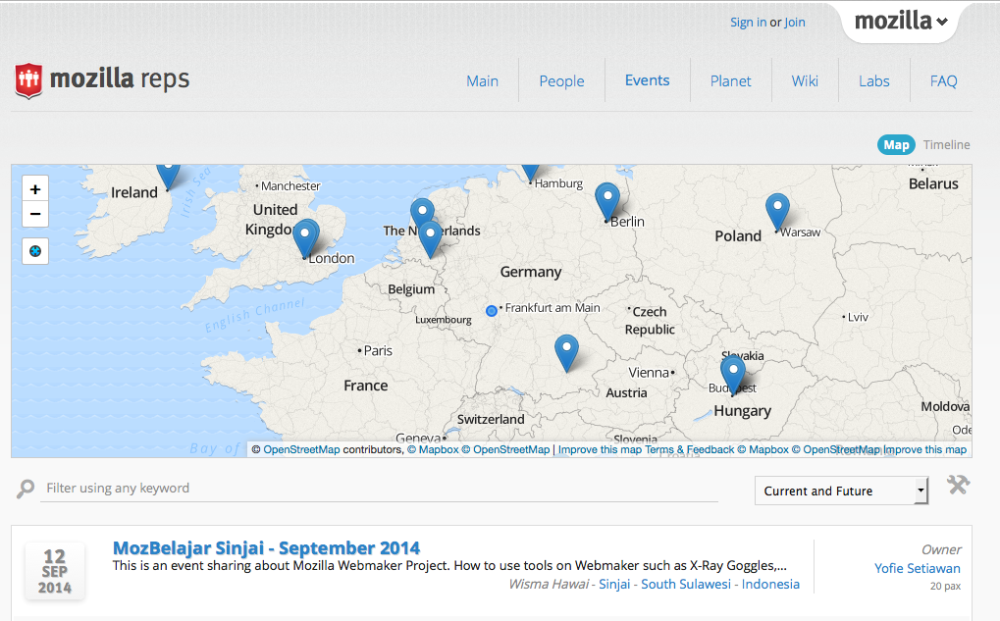

Web APIs
expand what the web can do...
Carsten Sandtner (@casarock) 2014 - code.talks 14
Who am I?
Carsten Sandtner
Head of Development at //mediaman GmbH
Mozilla representative
Javascript enthusiast and web developer since 1998.
The first browser war...

Microsoft vs. Netscape!
Arms race of features
Everyone invented new and "better" features!
support other features? Hell, NO!
And this happened...

Standards? What standards?
- W3C - ignored...
- "We know what you want!"
And Web Developers?
Implemented pretty good browser detection
And Browser vendors?
Browser Vendors wanted to be "supported"
... and this happened:
Faking User Agents
Mosaic/0.9 // grandmother of all!
Mozilla/2.02 [fr] (WinNT; I) // Netscapes first!
Mozilla/4.0 (compatible; MSIE 4.0; Windows 98) // IE4!
Funny? There is more...
Faking User Agents - part 2
Mozilla/5.0 (Windows; U; Windows NT 5.1; en-US; rv:1.8.1.11) Gecko/20071127 Firefox/2.0.0.11 // Firefox!
Mozilla/5.0 (compatible; Konqueror/Version; OS-or-CPU) KHTML/KHTMLVersion (like Gecko) // Konqueror
Mozilla/5.0 (Macintosh; U; PPC Mac OS X; en) AppleWebKit/124 (KHTML, like Gecko) Safari/125.1 // Safari!
And Chrome?
Mozilla/5.0 (Windows; U; Windows NT 5.1; en-US) AppleWebKit/525.13 (KHTML, like Gecko) Chrome/0.2.149.29 Safari/525.13
But Opera?
Opera/8.0 (Windows NT 5.1; U; en)
<9 ... >9 has...
Mozilla/4.0 (compatible; MSIE 6.0; Windows NT 5.1; en) Opera 9.50
Mozilla/5.0 (Windows NT 6.2; WOW64) AppleWebKit/537.36 (KHTML, like Gecko) Chrome/28.0.1500.95 Safari/537.36 OPR/15.0.1147.153
*sigh*
At the end: Everything is a Mozilla...

and Internet Explorer won the first browser war
Internet Explorer won
- Development stopped for 5 years!
- "Optimized for IE 6!"
- Standards? IE was the standard!
The second browser war...
The rise of the others
The others
Other browser vendors raised
They keep standards in mind and develop them together
- Mozilla (Firefox)
- Konqueror
- Safari
- Opera
- Chrome
Standards, everywhere standards!
There is not only one "tool" for the internet
New Feature: Implemented a STANDARD!
Competition?
Still exisits, but:
- Performance!
- Security!
- Release cycles!
Benchmarks
Standardized
Unique characteristic?
Add ons, technical features, developer tools etc..
Developers are being targeted.
“Make the Internet a better place”
The web won!
The "mobile" Web
eh? no.
The "real" mobile Web
Everything changes...
We want ...
- ... access to hardware features
- ... access Calendar, Addressbook
- etc.
We got it!
But: Lessons learned from the past
Standards!
New technologies need new APIs
Vendors work together
- Service Workers (Google&Mozilla)
- Web Components (Google&Mozilla)
- WebGL etc.
“The web is everywhere”
“The web in your hands”
Mobiles need new APIs
- iPhone 2007: No SDK, just HTML5!
- A smartphone without a browser? Unbelieveable!
- Smartphones pushed HTML5
HTML5 based OS
HTML5 OS needs new APIs
Firefox OS is open source and with standards in mind
Mozilla introduced new APIs for mobile devices
Consistent use of APIs
APIs submitted to W3C
Adopted by other mobile browsers ...
... and desktop browsers
more features, more fun!
Web APIs
tell me more
Definition
“WebAPI is a term used to refer to a suite of device compatibility and access APIs that allow Web apps and content to access device hardware (such as battery status or the device vibration hardware), as well as access to data stored on the device (such as the calendar or contacts list).
By adding these APIs, we hope to expand what the Web can do today and only proprietary platforms were able to do in the past.”
Disclaimer
Some WebAPIs are not (yet) a standard
I've marked them with a *
Categories
Web APIs could be categorized
- Communication
- Datamanagement
- Hardware access
- "other"
Communication
- Network Information API
- Bluetooth*
- Mobile Connection API*
- Network Stats API*
- TCP Socket API*
- Telephony*
- WebSMS*
- WiFi Information API*
Datamanagement
- IndexedDB
- Contacts API
- FileHandle API*
- Device Storage API*
- Settings API*
Hardware access
- Light events
- Battery status
- Geolocation
- Pointer Lock
- Proximity
- Device orientation
- Screen orientation
- Vibration API
- WebFM API*
- Camera API*
- Power Management API*
"Other"
- Alarm API
- Simple Push API
- Web Notifications
- Idle API
- Apps API*
- Web Activities*
- WebPayment API*
- Browser API*
- Permissions API*
- Time/Clock API*
Examples?

Network Connection
Information about the system's connection
var connection = navigator.connection ||
navigator.mozConnection ||
navigator.webkitConnection;
var type = connection.type;
function updateConnectionStatus() {
console.log("Connection type is change from " + type + " to " + connection.type);
type = connection.type;
}
connection.addEventListener('typechange', updateConnectionStatus);
Firefox 12+, Firefox Mobile, Firefox OS, Android 2.2+
IndexedDB
“IndexedDB is an API for client-side storage of significant amounts of structured data and for high performance searches on this data using indexes. ”
NoSQL DB for Browsers...
Deserves an own talk... too complex for this one...
Supported by: Every major Browser on Desktop and every major mobile browser ...
... excepted: Safari on iOS < 8
Notification
// At first, let's check if we have permission for notification
// If not, let's ask for it
if (Notification && Notification.permission !== "granted") {
Notification.requestPermission(function (status) {
if (Notification.permission !== status) {
Notification.permission = status;
}
});
}
if (Notification && Notification.permission === "granted") {
var n = new Notification("Hi!");
}
Desktop: Chrome 5+, Firefox 4+, Opera 25, Safari 6+
Mobile: Firefox Mobile 4+, Firefox OS
Light Events
Get current ambient light intensity
window.ondevicelight = function (event) {
// Read out the lux value
console.log(event.value);
};
Current lux: 0
Desktop: Firefox 22+
Mobile: Firefox Mobile
Battery Status
Information about the system's battery charge level and lets you be notified by events that are sent when the battery level changes
var battery = navigator.battery ||
navigator.mozBattery ||
navigator.webkitBattery,
info = {
charging: battery.charging,
chargingTime: parseInt(battery.chargingTime / 60, 10),
dischargingTime: parseInt(battery.dischargingTime / 60, 10),
level: Math.round(battery.level * 100)
};
function updateBatteryStatus() {
batterylevel.innerHTML = battery.level * 100 + " %";
batterystatus.innerHTML = battery.charging ? "" : "not";
}
battery.addEventListener("chargingchange", updateBatteryStatus);
battery.addEventListener("levelchange", updateBatteryStatus);
Battery: Level is and it's charging.
Desktop: Firefox 10+ Mobile: Firefox Mobile 10+
Proximity Events
The proximity events are a handy way to know when a user is close to a device
window.addEventListener('userproximity', function(event) {
if (event.near) {
console.log('Phone probably on users ear...');
} else {
console.log('phone in your hand...');
}
});
Detecting device orientation
Detection orientation and motion events
window.addEventListener("deviceorientation", handleOrientation, true);
function handleOrientation(event) {
var alpha = event.alpha; // Z-Axis
var beta = event.beta; // Y-Axis
var gamma = event.gamma; // X-Axis
// Do stuff with the new orientation data
}
window.addEventListener("devicemotion", handleMotion, true);
function handleMotion(event) {
var x = event.accelerationIncludingGravity.x;
var y = event.accelerationIncludingGravity.y;
var z = event.accelerationIncludingGravity.z;
var r = event.rotationRate;
}
Information about the speed of changes for the device's position and orientation.
Desktop: Chrome 7+, 3.6+
Mobile: Android 3.0, Firefox Mobile 3.6+, Safari Mobile 4.2+
Vibration API
Rumble in your pocket!
var pattern = [200, 100, 200, 200, 100],
goodVibration = navigator.vibrate(pattern);
Mobile: Android, Firefox Mobile 11+
Screen orientation
Listening orientation change
screen.addEventListener("orientationchange", function () {
console.log("The orientation of the screen is: " + screen.orientation);
});
Preventing orientation change
screen.lockOrientation('landscape');
Support is complex: This API is experimental and currently available on Firefox OS and Firefox for Android with a moz prefix, and for Internet Explorer on Windows 8.1 and above with a ms prefix.
Pointer Lock
Request pointer lock on an element
canvas.requestPointerLock = canvas.requestPointerLock ||
canvas.mozRequestPointerLock ||
canvas.webkitRequestPointerLock;
canvas.requestPointerLock();
Listen for changes
document.addEventListener('pointerlockchange', lockChangeAlert, false);
document.addEventListener('mozpointerlockchange', lockChangeAlert, false);
document.addEventListener('webkitpointerlockchange', lockChangeAlert, false);
Exit pointer lock
document.exitPointerLock = document.exitPointerLock ||
document.mozExitPointerLock ||
document.webkitExitPointerLock;
// Attempt to unlock
document.exitPointerLock();
Desktop: Chrome, Firefox
Page visibility
The Page Visibility API lets you know when a webpage is visible or in focus
if (document.hidden) {
// stop video etc.
}
document.addEventListener("visibilitychange", handleVisibilityChange, false);
function handleVisibilityChange() {
if (document.hidden) {
// stop something. e.g. stop a video, audio etc...
} else {
// do something else ;) play video, audio... you got it?
}
}
Currently prefixed (moz, webkit, ms)
Desktop: Chrome, Firefox 30+, Safari 7+, Opera 24+, IE10+
Mobile: Chrome Android, Android 4.4+, Firefox Mobile, Firefox OS
*Yawn* Nice...

... but these examples are just....
... examples
OK
Some live examples...
But first...
... some real world examples
BBC News
Network Information API
Warns when cellular connection detected and video should be played
Firefox Marketplace
Network Information API
Paying via carrier billing - Cellular detected
Firefox Marketplace 2
Network Information API
When WIFI is detected
Confirmation code via SMS
Mozilla Reps - Events
Geolocation

OK
NOW! Some live examples...
Ambient light
Notifications
And of course: Have FUN!
Install via AppInstall* API
AppInstallAnd on a Device
VideoConclusion
- Standards are cool
- WebAPIs allow us to build cooler web apps
- WebAPIs are not a "mobile"-thingy
- The "Web" becomes (more) "native"
Thank you!
Carsten Sandtner
@casarock
Slides & Examples: casarock.github.io